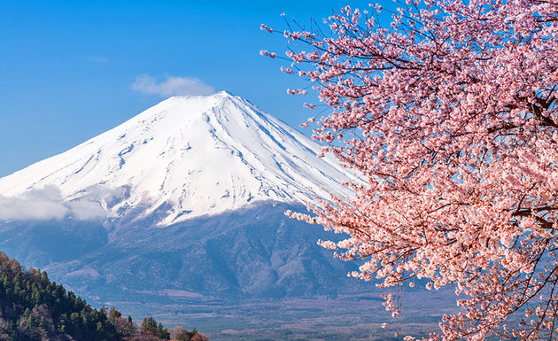

Visit Japan
Visit Japan
View below for Japanese Attractions
Japan is known for its beauty, and its citywide attractions help fortify then country's beauty and diverse culture.
It's known well for having attractions both within Tokyo city borders and outside them.
Tokyo City Attractions
Tokyo Imperial Palace
The current Imperial Palace (Kōkyo) is located on the former site of Edo Castle, a large park area surrounded by moats and massive stone walls in the center of Tokyo, a short walk from Tokyo Station. It is the residence of Japan's Imperial Family.The inner grounds of the palace are generally not open to the public. Only on January 2 (New Year's Greeting) and December 23 (Emperor's Birthday), visitors are able to enter the inner palace grounds and see the members of the Imperial Family, who make several public appearances on a balcony. Furthermore, guided tours of the palace grounds are offered during the rest of the year, although no buildings are entered. The tours take about 75 minutes and are held in Japanese daily at 10:00 and 13:30 except on Sundays and Mondays. Advance reservations can be made through the Imperial Household Agency, but same-day registrations before the start of the tours are also possible at the Kikyomon Gate.
Click the image for further information
Tōkyō Skytree
Tōkyō Skytree is a broadcasting, restaurant, and observation tower in Sumida, Tokyo, Japan. It became the tallest structure in Japan in 2010 and reached its full height of 634.0 metres in March 2011, making it the tallest tower in the world, displacing the Canton Tower, and the second tallest structure in the world after the Burj Khalifa (829.8 m)The tower is the primary television and radio broadcast site for the Kanto region; the older Tokyo Tower no longer gives complete digital terrestrial television broadcasting coverage because it is surrounded by high-rise buildings. Skytree was completed on 29 February 2012, with the tower opening to the public on 22 May 2012. The tower is the centrepiece of a large commercial development funded by Tobu Railway and a group of six terrestrial broadcasters headed by NHK. Trains stop at the adjacent Tōkyō Skytree Station and nearby Oshiage Station.
Click the image for further information

Sensō-ji
Sensō-ji (also known as Asakusa Kannon Temple) is a Buddhist temple located in Asakusa. It is one of Tokyo's most colorful and popular temples.The legend says that in the year 628, two brothers fished a statue of Kannon, the goddess of mercy, out of the Sumida River, and even though they put the statue back into the river, it always returned to them. Consequently, Sensoji was built nearby for the goddess of Kannon. The temple was completed in 645, making it Tokyo's oldest temple.When approaching the temple, visitors first enter through the Kaminarimon (Thunder Gate), the outer gate of Sensoji Temple and the symbol of Asakusa and the entire city of Tokyo.A shopping street of over 200 meters, called Nakamise, leads from the outer gate to the temple's second gate, the Hozomon. Alongside typical Japanese souvenirs such as yukata and folding fans, various traditional local snacks from the Asakusa area are sold along the Nakamise. The shopping street has a history of several centuries.
`Click the image for further information
Outside the City Attractions
Mount Fuji
Mount Fuji (Fujisan) is with 3776 meters Japan's highest mountain. It is not surprising that the nearly perfectly shaped volcano has been worshiped as a sacred mountain and experienced big popularity among artists and common people throughout the centuries. Mount Fuji is an active volcano, which most recently erupted in 1707. It stands on the border between Yamanashi and Shizuoka Prefectures and can be seen from Tokyo and Yokohama on clear days. Another easy way to view Mount Fuji is from the train on a trip between Tokyo and Osaka. If you take the shinkansen from Tokyo in direction of Nagoya, Kyoto and Osaka, the best view of the mountain can be enjoyed from around Shin-Fuji Station on the right hand side of the train, about 40-45 minutes into the journey.
Click the image for further information
Harajuku
Harajuku refers to the area around Tokyo's Harajuku Station, which is between Shinjuku and Shibuya on the Yamanote Line. It is the center of Japan's most extreme teenage cultures and fashion styles, but also offers shopping for adults and some historic sights. The focal point of Harajuku's teenage culture is Takeshita Dori (Takeshita Street) and its side streets, which are lined by many trendy shops, fashion boutiques, used clothes stores, crepe stands and fast food outlets geared towards the fashion and trend conscious teens. Harajuku is not only about teenage culture and shopping. Meiji Jingu, one of Tokyo's major shrines, is located just west of the railway tracks in a large green oasis shared with the spacious Yoyogi Park. Beautiful ukiyo-e paintings are exhibited in the small Ota Memorial Museum of Art, and the Nezu Museum has an impressive collection of various Asian art as well as a traditional Japanese garden.
Click the image for further information
Sensō-ji
Odaiba is a popular shopping and entertainment district on a man made island in Tokyo Bay. It originated as a set of small man made fort islands (daiba literally means "fort"), which were built towards the end of the Edo Period (1603-1868) to protect Tokyo against possible attacks from the sea and specifically in response to the gunboat diplomacy of Commodore Perry. More than a century later, the small islands were joined into larger islands by massive landfills, and Tokyo began a spectacular development project aimed to turn the islands into a futuristic residential and business district during the extravagant 1980s. But development was critically slowed after the burst of the "bubble economy" in the early 1990s, leaving Odaiba nearly vacant.It was not until the second half of the 1990s, when several hotels, shopping malls and the Yurikamome elevated train line were opened, that Odaiba developed into one of Tokyo's most popular tourist attractions and date spots with a wide selection of shopping, dining and leisure options.
Click the image for further information

Expand for a Back to Top Link
Back to TopCreated by - Prateek Bansal
on Friday June 9 2017
All content, unless otherwise stated, is the property of Prateek Bansal